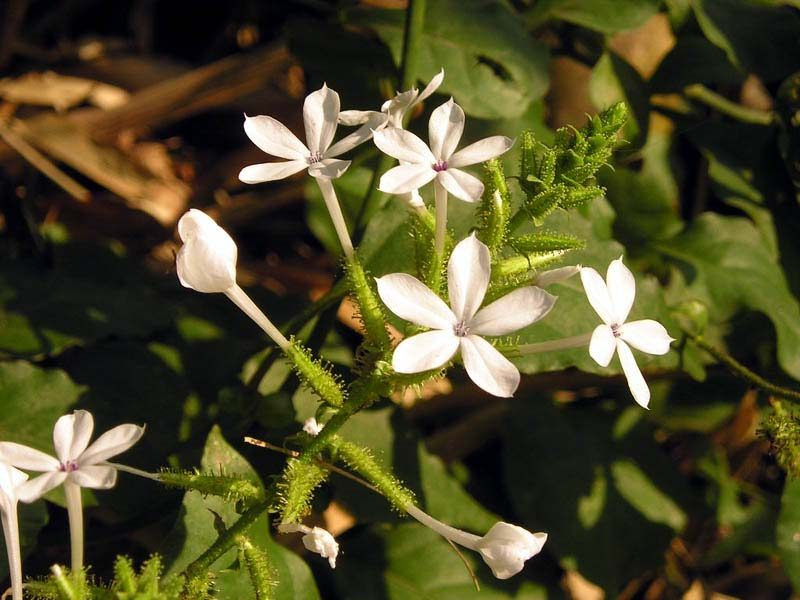

चित्रकCeylon Leadwort
Plumbago zeylanica · Plumbaginaceae · FLR-0251

- Scientific name वैज्ञानिक नाम
- Plumbago zeylanica L.
- Family कुल
- Plumbaginaceae
- Hindi हिंदी
- चित्रक
- Local names स्थानीय नाम
- chitrak, chitra, chitrakmool, leadwort
- Status here यहाँ की स्थिति
- native
- Movement आवागमन
- Resident, here all year
- Known from कहाँ दर्ज
- Others have published records from the Basti–Ayodhya districts बस्ती–अयोध्या के ज़िलों से दूसरों के प्रकाशित अभिलेख
- IUCN IUCN
- not evaluated
- Review समीक्षा
- audited and independently read
When to look कब देखें
Present all year. साल भर मौजूद।
Uses and possibilities उपयोग और संभावनाएँ
“Traditional medicine” means a documented traditional use, not a claim that it works. Nothing on this page is medical advice.
Drawn from the documented uses in the profile below, where each is labelled traditional, current or a research lead. All uses →
चित्रक / Ceylon Leadwort
Plumbago zeylanica L. — Plumbaginaceae
चित्रक (श्वेत चित्रक, "पेंटर" या "डाइ प्लांट") — एक झाड़ीदार, खुरदरी पत्तियों वाली झाड़ी जो पूर्वी उत्तर प्रदेश के बाग़ों और खेतों के किनारों पर कहीं-कहीं दिखती है। सफ़ेद फूल गर्मी से लेकर सर्दी तक दिखते हैं। यह एक महत्वपूर्ण आयुर्वेदिक दवा है जिसे त्वचा संबंधी समस्याओं, गठिया और पाचन संबंधी रोगों के लिए जाना जाता है। हालांकि, इसमें मजबूत रासायनिक यौगिक हैं और इसे सावधानी से और सही खुराक में उपयोग करना चाहिए। पारंपरिक चिकित्सा में इसे "महा-जवरांतक" (बुखार को कम करने वाला) माना जाता है।
Quick Identification त्वरित पहचान
| Feature | Description |
|---|---|
| Plant habit | Bushy, herbaceous to woody shrub, 0.5–1.5 m, erect, rough-textured |
| Leaves | Alternate, lanceolate to oblong, 5–15 cm, margins entire, base narrowed, slightly hairy |
| Stem | Herbaceous to woody, angular, hairy, green to purplish |
| Flowers | White, blue, or pale pink, 1.5–2 cm diameter, five-petaled, in terminal racemes |
| Fruits | Five-chambered capsule with prominent crown-like appendages; seeds black |
| Texture | Rough, slightly sticky or viscous |
Field tip: Look in old gardens and hedges for a bushy, slightly hairy plant with lanceolate leaves and white or pale flowers. The flowers are distinctive with five equal petals and a long tube. The fruit is characteristic, with a crown-like top.
हिंदी — कैसे पहचानें: सफ़ेद फूल, खुरदरी पत्तियाँ, झाड़ीदार पौधा, पुराने बाग़ों में मिलता है।
Morphology आकारिकी
Biometrics:
| Measurement | Range |
|---|---|
| Plant height | 0.5–1.5 m |
| Leaf length | 5–15 cm |
| Leaf width | 1.5–4 cm |
| Flower diameter | 1.5–2 cm |
| Flower tube length | 1.5–2.5 cm |
| Fruit length | 1.2–1.5 cm |
Stems: Angular, hairy or scabrous (rough to touch), becoming woody at the base.
Leaves: Simple, alternate, lanceolate to oblong-lanceolate, apex acute or obtuse, base narrowed, margins entire, sparsely hairy on both surfaces, slightly viscid (sticky) to touch.
Flowers: Five-petaled, white, pale blue, or pink, with a long, slender tube and flat limb (the spreading part). Flowers in terminal racemes; stamens five, unequal; ovary superior, one-chambered, one-ovuled.
Fruits: Capsules, five-lobed or five-winged at apex, opening from the top; seeds black, shining.
हिंदी: खुरदरी पत्तियाँ, सफ़ेद पाँच-पंखुड़ी वाले फूल, झाड़ी जैसा पौधा।
Behaviour & Ecology व्यवहार और पारिस्थितिकी
A woody shrub tolerant of poor and dry soils, thriving in disturbed habitats and hedgerows. It is semi-deciduous, shedding some leaves in the very dry season but generally maintaining foliage. The plant is drought-tolerant and long-lived, often persisting in old homesteads long after other plants have vanished. The flowers are pollinated by insects, particularly bees and butterflies, and seeds are dispersed by wind. The plant self-seeds readily in suitable microsites and is persistent in the local flora.
हिंदी: सूखा सहन करने वाला, लंबे समय तक रहने वाला पौधा, बुज़ुर्ग बाग़ों में अक्सर पाया जाता है।
Life Cycle / Phenology जीवन चक्र
| Month / season | Event |
|---|---|
| April–May | Reduced growth in hot season; some leaf fall |
| June–July | New leaves flush with monsoon onset |
| August–September | Rapid growth; flowering begins |
| September–January | Peak flowering; fruit set |
| January–March | Gradual leaf fall; reduced growth in cool season |
The plant is long-lived and woody; it survives frost in the plains and colder uplands, though new shoots are more tender.
हिंदी: गर्मी में धीरे, बरसात में तेज़, सर्दी तक फूल आते हैं, पुराना पौधा बहुत साल तक रहता है।
Associated Species / Interactions संबंधित प्रजातियाँ
- Garden companions: often grown alongside Neem, Holy Basil, and other medicinal plants
- Traditional use associations: combined with Ashwagandha, Turmeric, and Brahmi in Ayurvedic formulations
Pests and Diseases कीट और रोग
Occasionally affected by powdery mildew on leaves in humid weather; this rarely threatens the plant's survival. Rarely attacked by serious pests; the rough texture of leaves provides some natural protection.
Agricultural / Human Relevance कृषि प्रासंगिकता
Important note — Toxicity and safe use: Plumbago zeylanica contains plumbagin, a toxic chemical compound. The plant should be used only under the guidance of a qualified Ayurvedic practitioner. Overdose or improper use can cause gastroenteritis, skin irritation, and other adverse effects. This account is educational and not medical advice.
Ethnobotanical use (documented traditional knowledge; not medical advice). In classical Ayurvedic texts such as Bhava Prakasha, Charaka Samhita, and Sushruta Samhita, Chitrak is listed as a powerful herb for stimulating digestion (deepan) and promoting fat metabolism (lehan). It is also recommended for skin diseases, particularly those associated with toxins. The plant is said to have warming and pungent properties and is used in formulations with caution and in small doses. Traditional practitioners use it for rheumatoid arthritis and gout.
Cautions: The root and root bark are the most potent parts and carry the highest toxicity risk. The plant should never be used during pregnancy or by people with sensitive digestive systems. Skin contact with the plant can cause dermatitis in sensitive individuals; the plumbagin in the sap is the likely cause.
Today. Still used in Ayurvedic and Siddha medicine, usually in small, carefully measured doses as part of complex formulations. Modern cultivation is limited; most supply comes from wild-harvested plants.
हिंदी: आयुर्वेद में बहुत प्रभावशाली दवा है, लेकिन ख़तरनाक भी है। केवल योग्य वैद्य की देखरेख में ही उपयोग करें। त्वचा संपर्क से खुजली हो सकती है।
Expected Locally स्थानीय रूप से अपेक्षित
Not a field record. Written from published accounts for eastern Uttar Pradesh. No confirmed local sighting yet — if you have seen it, that is what the atlas needs.
अभी तक स्थानीय पुष्टि नहीं। यह विवरण प्रकाशित स्रोतों से है, किसी अवलोकन से नहीं।
GBIF holds published records from the core six districts of the region. To be expected in old homestead gardens, hedge systems, and scrubby ground from August through February. Likely more common in the cooler months.
Distribution वितरण
Global range: Native to tropical Asia; widespread from India to Myanmar and beyond.
In India: Widespread in the Indo-Gangetic plain, southern India, and in gardens across the country.
In Uttar Pradesh: Found in scattered locations, particularly in gardens and hedges.
In Basti district / eastern UP: Recorded from the core region; likely more common than current records indicate.
Research Questions शोध प्रश्न
Anyone can investigate these | कोई भी इन प्रश्नों की जाँच कर सकता है
- Where does Plumbago zeylanica grow in your area, and is it wild or planted? / आपके इलाक़े में चित्रक कहाँ मिलता है, जंगली है या लगाया गया? — Check old gardens and wild areas.
- Is it still used in any household remedy or Ayurvedic preparation locally? / क्या कोई इसे अभी भी घर में या वैद्य के पास देखता है? — Ask in households and Ayurvedic clinics.
- Does the plant cause skin irritation when touched, and in what season is the irritation worst? / क्या छूने से खुजली होती है, किस मौसम में सबसे ज़्यादा? — Conduct careful tests.
- What insects pollinate the flowers? — Observe flowering plants for 30 minutes in October.
- How many seeds does one plant produce in a season, and how far do they disperse? — Collect mature fruits and count and measure.
Similar Species मिलती-जुलती प्रजातियाँ
| Species | How to tell apart | हिंदी |
|---|---|---|
| Plumbago auriculata (Cape Leadwort) | Flowers typically blue or light blue, not white; less rough texture; not native to Asia | नीले फूल, कम खुरदरा |
| Neem (Azadirachta indica) | Larger tree, pinnate leaves, winged seeds, bitter taste | बहुत बड़ा पेड़, पत्तियाँ पंखनुमा |
Field rule: A shrubby plant with lanceolate, rough leaves and white or pale pink flowers with a long tube, and with a five-lobed crown-topped fruit is Plumbago zeylanica.
Taxonomy & Classification वर्गीकरण
Original description. Described by Linnaeus in 1753 in Species Plantarum. The epithet zeylanica refers to Ceylon (Sri Lanka), though the plant is more widespread. The genus name Plumbago is derived from the Latin "plumbum" (lead), referring to traditional (false) beliefs that the plant could extract lead from the body.
Subspecies. Monotypic — no subspecies are currently recognised.
Family and order placement. Plumbaginaceae (the leadwort family), order Plumbaginales. A monotypic genus with several other species distributed across warm regions.
Phylogenetic notes. Plumbago is basal within Plumbaginaceae; relationships to other genera are being refined through molecular work.
IUCN status rationale. Not evaluated. Widespread in cultivation and semi-wild; no conservation concern.
Photo Gallery फोटो गैलरी
Photos needed आवश्यक फोटो
- [ ] Whole plant in a garden, October (पूरा पौधा)
- [ ] White flowers close-up (सफ़ेद फूल)
- [ ] Leaves showing rough texture (पत्तियों का विस्तार)
No photos yet — add field photos to media/species/ceylon_leadwort/ and run node scripts/sync_photos.js.
References संदर्भ
- Linnaeus, C. (1753). Species Plantarum, ed. 2. Stockholm. [original description]
- Hooker, J.D. (1882). The Flora of British India, vol. 4. L. Reeve, London. (Plumbago)
- Duthie, J.F. (1903). Flora of the Upper Gangetic Plain and of the Adjacent Siwalik and Sub-Himalayan Tracts. Government Printing, Calcutta.
- Charaka (compiled by; translated Sharma & Das, 1998). Charaka Samhita, vol. 1. Chowkhambha Sanskrit Series, Varanasi.
- Bhava Prakasha (translated Sharma & Das, 2010). Bhava Prakasha of Bhava Misra, vol. 1. Chowkhambha Sanskrit Series, Varanasi.
- GBIF Occurrence Data — Plumbago zeylanica, India (2026).
Source file: species/flora/medicinal/ceylon_leadwort.md